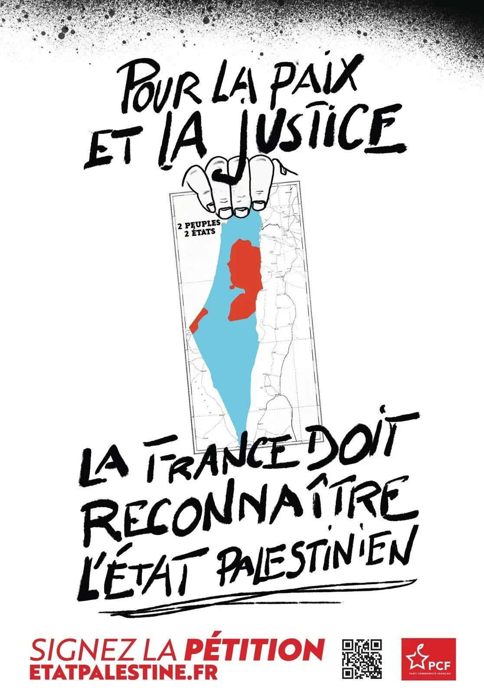

Publication relayée par le PCF 79
Le PCF réitère son appel à reconnaître l’État de Palestine
Date de mise à jour indiquée par Facebook · 5 février 2025
Texte de la publication · PCF national
Nouvelles menaces sur Gaza avec le retour en force de l'impérialisme US à la sauce Trump.
La reconnaissance par la France de l'Etat de Palestine est plus urgente que jamais !
Signez la pétition :
https://www.pcf.fr/petition_reconnaissance_palestine/

Sources
PCF national · publication relayée par le PCF 79 · bibliothèque Facebook · AR-0002-FB-01198
À lire aussi · Journée internationale de la paix. Le texte national dans le relevé